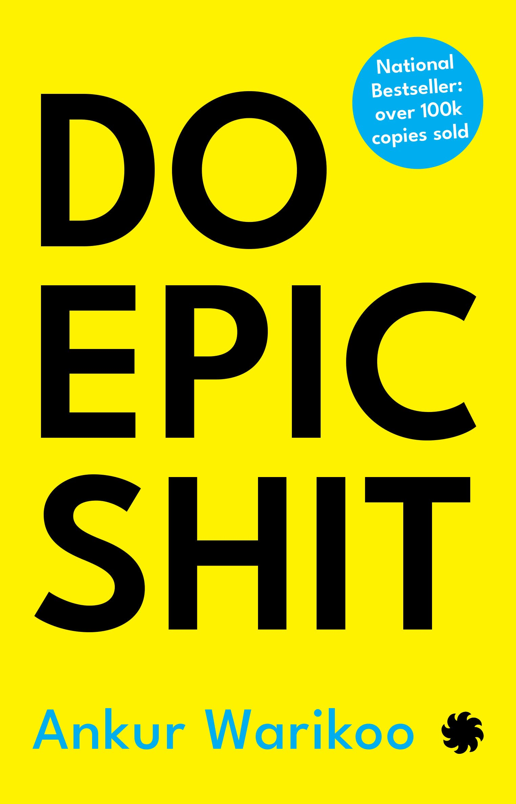

|
Non-Fiction |
Book Suggestion |
|
Non-Fiction |
Book Suggestion |
Non-fiction is any document or media content that attempts, in good faith, to provide accurate information regarding a real-world topic. It is written to communicate facts or opinions about reality. Nonfictional content may be presented either objectively or subjectively.
| Books | Summary | Author |
| Business Adventures will teach you how to run a company, invest in the stock market, change jobs, and many other things by sharing some of the most interesting experiences that big companiesand their leaders have had over the last century |
John Brooks was a writer and longtime contributor to The New Yorker magazine, where he worked for many years as a staff writer, specializing in financial topics. |
|
|  | In his first book, Do Epic Shit”, Ankur Warikoo talks about success and failures, importance of habits, self-awareness, entrepreneurship, money and relationships. He talks about his failures with such ease....... At times stressing more on the failures and what he has learnt from them. |
Ankur Warikoo is an Indian YouTuber, entrepreneur and an author. He is the former CEO of Groupon India, co-founder & former CEO of Nearbuy. In 2021, he has published his first book - Do Epic Shit. |
 |
The #1 New York Times bestseller. Over 4 million copies sold! Tiny Changes, Remarkable ResultsNo matter your goals, Atomic Habits offers a proven framework for improving--every day. |
James Clear is a writer and speaker focused on habits, decision making, and continuous improvement. He is the author of the #1 New York Times bestseller, Atomic Habits. The book has sold over 9 million copies worldwide and has been translated into more than 50 languages. |
| Thinking, Fast and Slow is a 2011 book by psychologist Daniel Kahneman. The book's main thesis is that of a dichotomy between two modes of thought: "System 1" is fast, instinctive and emotional; "System 2" is slower, more deliberative, and more logical. |
Daniel Kahneman is an Israeli-American psychologist and economist notable for his work on the psychology of judgment and decision-making, as well as behavioral economics, for which he was awarded the 2002 Nobel Memorial Prize in Economic Sciences. | |
| Javier Zamora's adventure is a three-thousand-mile journey from his small town in El Salvador, through Guatemala and Mexico, and across the U.S. border. He will leave behind his beloved aunt and grandparents to reunite with a mother who left four years ago and a father he barely remembers. | Javier Zamora was born in La Herradura, El Salvador, in 1990. At the age of nine he migrated to the United States to be reunited with his parents. Zamora holds a BA from the University of California, Berkeley, where he studied and taught in June Jordan's Poetry for the People; and an MFA from New York University. |